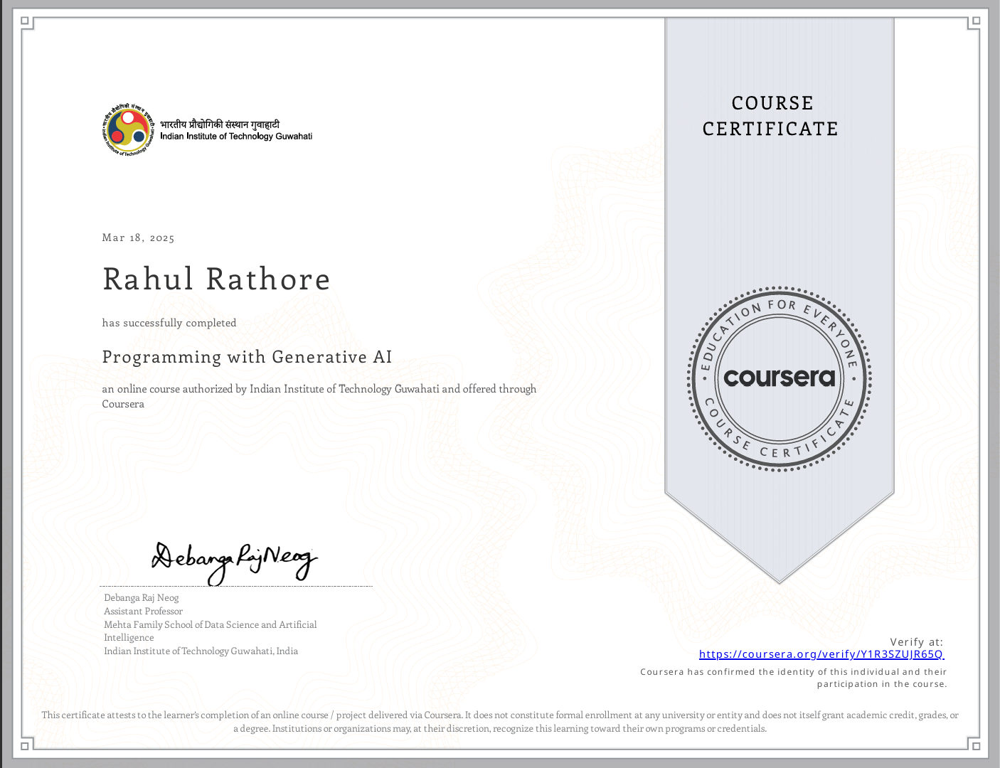
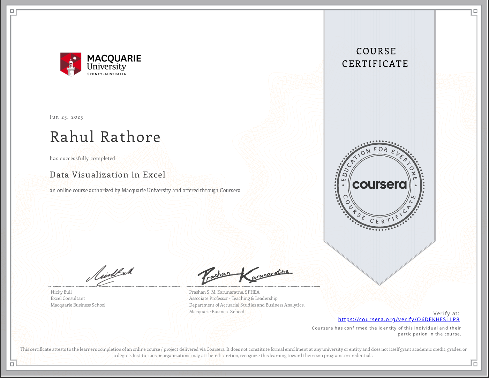
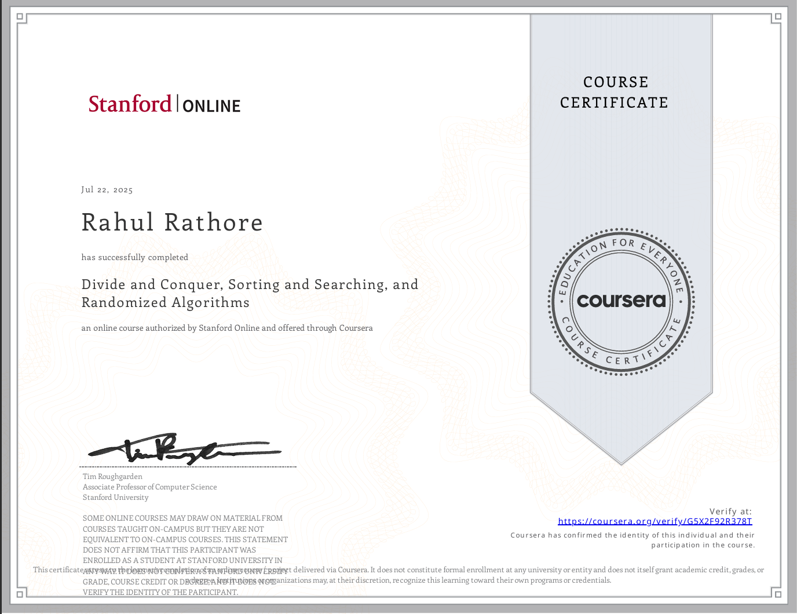

Languages
C++ · Python · C · Java · SQL
AI · DATA · SOFTWARE
B.Tech. — Computer Science & Engineering
Lovely Professional University
A computer science student building practical machine-learning products, data-driven tools, and intuitive web experiences.
I’m Rahul Rathore, a Computer Science and Engineering student with a keen interest in AI, data, and software that makes a difference.
I enjoy translating data into clarity—from predicting stock trends and academic outcomes to creating accessible, audience-aware AI tools.
Focused on machine learning, thoughtful products, and strong engineering fundamentals.
C++ · Python · C · Java · SQL
NumPy · Pandas · TensorFlow · PyTorch · Scikit-learn
Matplotlib · Seaborn · Excel
HTML · CSS · JavaScript · Streamlit · Git · Google Colab
Problem-solving · Teamwork · Quick learning
Built a machine-learning workflow to preprocess historical market data, identify signals, and forecast future stock prices.
An interactive Streamlit application that predicts student performance categories with a modular ML pipeline.
An audience-aware rewriter that applies Agentic AI and LLM concepts to adapt content for different contexts and audiences.

IIT Guwahati · Coursera

Macquarie University · Coursera

Stanford Online · Coursera
AUG 2026 — PRESENT
Bachelor of Technology — Computer Science & Engineering
CGPA: 7.64
AUG 2026 — PRESENT
BS (Hons) — Data Science & Artificial Intelligence
CGPA: 7.60
MAR 2022 — MAY 2023
Intermediate
Percentage: 85.2%